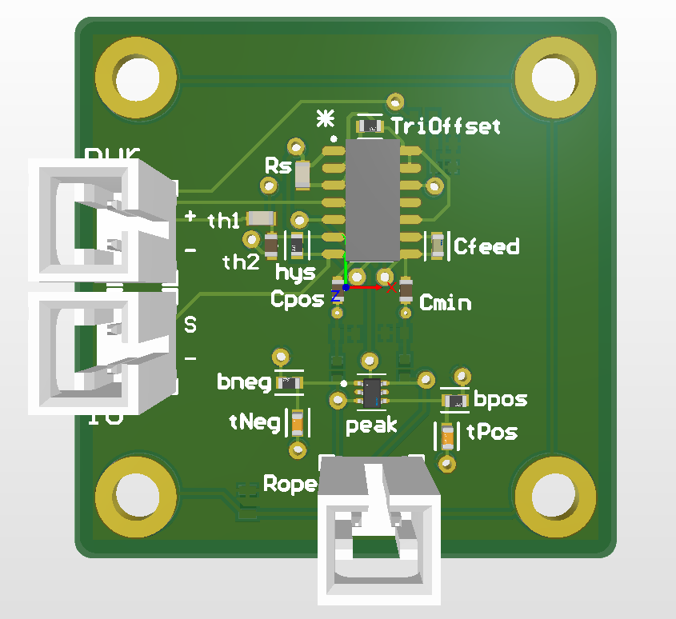
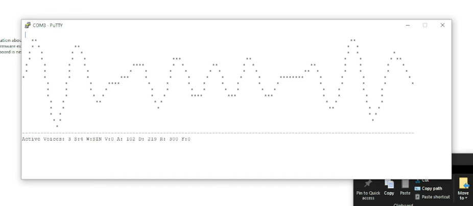

I like building hardware
and knowing exactly why it works.
I'm Logan, an EE undergraduate at the University of Florida. I design and fabricate hardware, build the firmware that drives it, and do research on thermal-aware computing for mobile robots in the FOCUS Lab.

Critical thought, deliberative discussion.
I value critical thought and deliberative discussion to solve problems, regardless of the area of focus. My interest in electrical engineering grew from taking apart computer hardware, an incurable curiosity about how devices work, and a learning environment that encouraged chasing that curiosity. These days it points at analog and mixed-signal circuits, power electronics, VLSI, and optical sensing.
Things I've built.
EdgeTrain
Thermal-adaptive continual learning for robot-mounted edge GPUs. I built the thermal instrumentation: a calibrated FLIR imaging pipeline, a 150 W radiant-heat rig, and the DVFS characterization behind the paper's central claims.
Leak Detector
Water-ingress detection board for UF's autonomous submarine: LTspice comparator front end through Altium layout to fabrication release.

Wavetable Synthesizer
3-voice polyphonic synth on an ATxmega128A1U: ping-pong DMA audio, inline-assembly mixing, and a live serial oscilloscope. Demo video.
Interests.
Analog & mixed-signal
Amplifier and regulator design, loop stability, data converters.
Power electronics
Regulation, protection, MOSFET switching, power integrity.
VLSI circuits
Analog IC design coursework at the graduate level, headed toward tapeout skills.
Optical sensing & photonics
Thermal imaging, foveated and computational sensors.